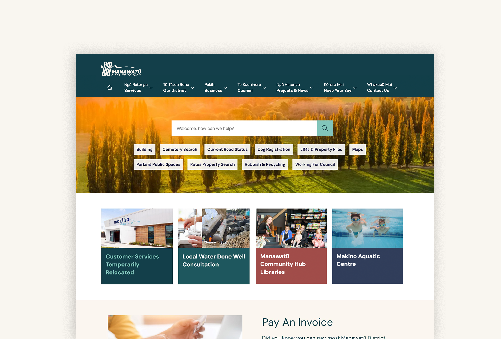
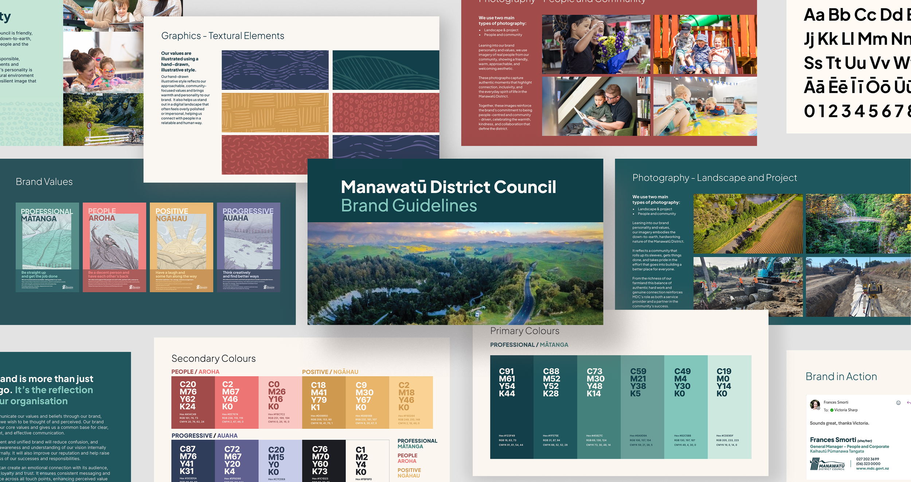
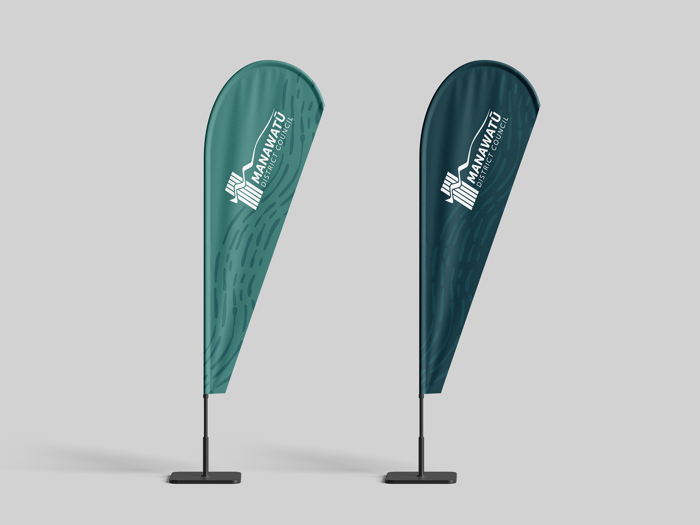
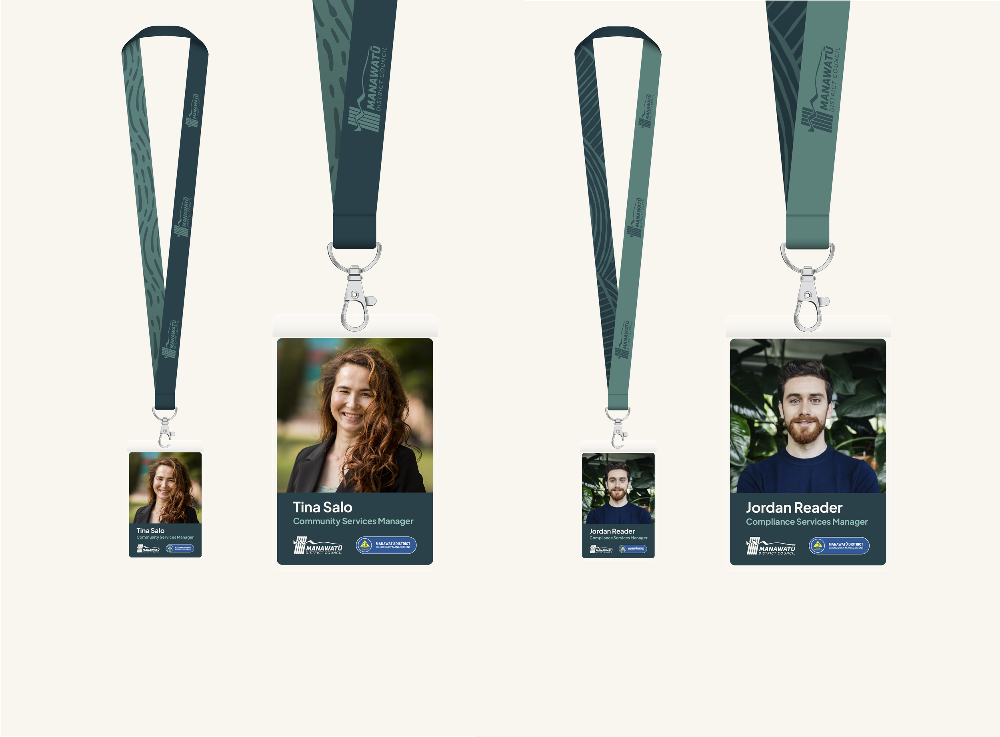

Government · Brand
Shaping the Future Look of Manawatū District Council

I led the strategic refresh of the Manawatū District Council (MDC) brand - creating a clear, flexible system that better reflects the Council's purpose, values and future direction, and gives MDC a consistent voice and look across every touchpoint.
Stakeholders chose to retain the original 1989 community-designed logo, refined with one small but meaningful change: adding the macron to Manawatū, so the district's name is represented accurately and respectfully. Around it, we built a contemporary brand framework - a richer colour palette, refreshed typography, and photography and illustration styles that feel warm, human and grounded, bringing to life the Council's values of Professional / Matanga, People / Aroha, Positive / Ngahau and Progressive / Auaha.
Alongside the brand refresh, I led the redesign of the MDC website: migrating to a new CMS template, project-managing an organisation-wide content review, and reshaping the information architecture around what residents actually need. Internal and external user research and stakeholder workshops informed the approach, with accessibility (WCAG 2.2) and NZ Government Digital Standards embedded throughout, and Council-wide branded email signatures rolled out alongside it.
Combined with consistent storytelling across print and digital, the result is a unified, future-ready brand that strengthens recognition and trust - grounded in community values, designed for what's next.


